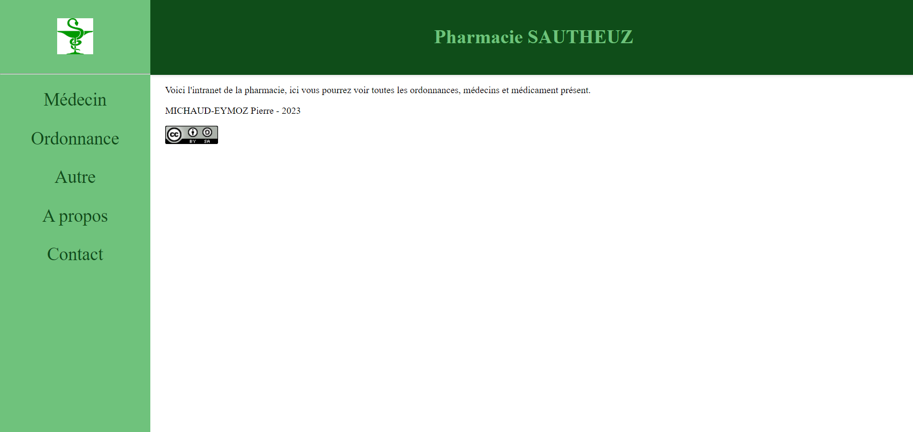
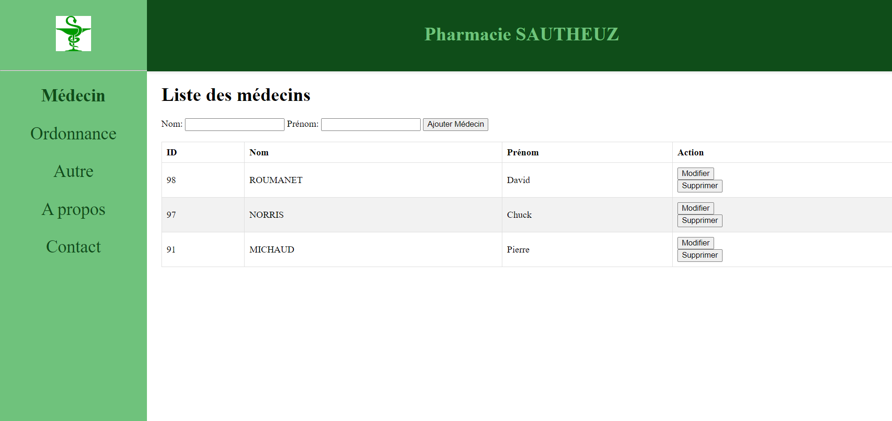
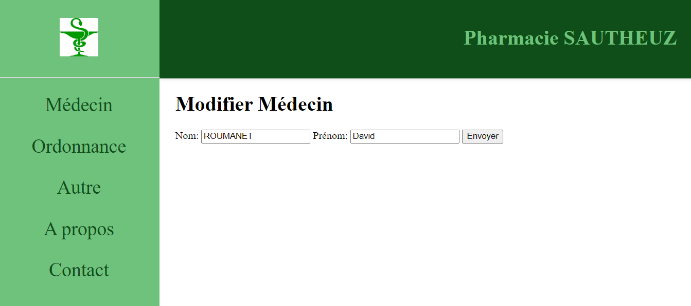
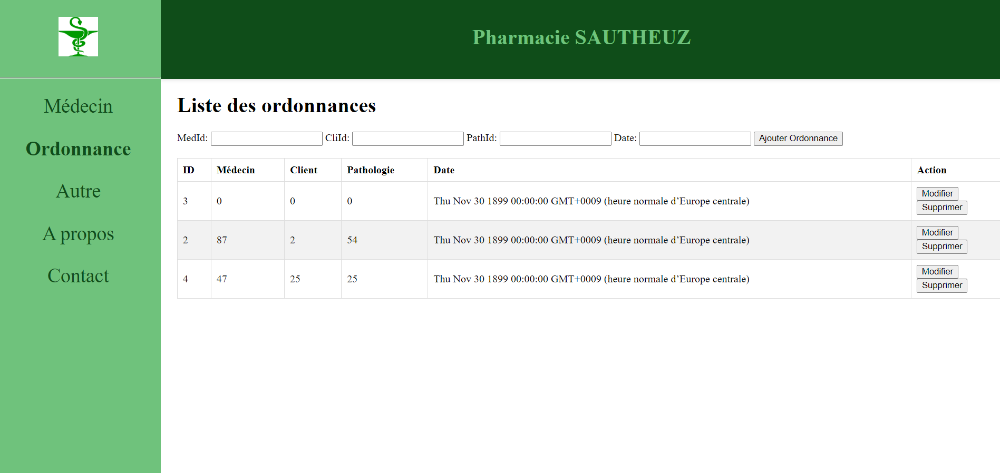

Nuit de l'Info
Présentation
Compétition nationale qui réunit étudiants, enseignants et entreprises pour travailler
ensemble sur le développement d’une application web.
Tous les ans, du premier jeudi du mois de décembre, coucher du soleil, jusqu'au lever du soleil
le lendemain matin.
Les participants ont la durée d'une nuit pour proposer, implémenter et packager une application Web 2.0.
Notre équipe
SLAMTY SPRINGS
Composition :
Ismael le chef
Wisâm le gérant
Lucas le doyen
Florian binôme de Dawson
Dawson binôme de Florian
Jibril l'habitué
Pierre (moi) le jeunot
Défis choisis
Défi de la nuit 2023 (principal)
Easter egg (élément caché)
Ubisoft (création du pitch d'un jeu)
Jeu Thème (changement de thème)
404 Tetris (Tetris lorsque la page n'est pas trouvé)
Jeu de rythme (jeu en rythme avec les flèches directionnelles)
Pharmacie Sautheuz
Présentation
Projet mené avec l'aide de monsieur Roumanet, notre professeur de développement.
Ce projet visait à aider (fictivement) les pharmaciens de la pharmacie Sautheuz à gérer leur stock de médicaments,
les ordonnances, et les différents médecins en créant un intranet.
Le but était donc de créer une partie de cette application, ce que j'ai fait pour la partie médecin.
Image de mon site
Accueil

Liste des medecins

Modifier un medecins

Liste des ordonnances
